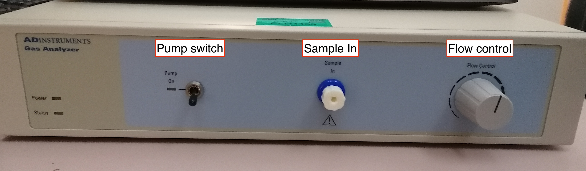
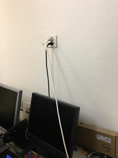

Before each session
Thanks
All the documentation about the eye-tracker is derived from Benedetta Franceschiello's user guide. We greatly appreciate her help with the eye-tracker.
Instructions of operations to be performed before the participant arrival, before EACH session (i.e., DAY OF SCAN)
Documentation and other non-experimental devices¶
- Prepare the informed consent form (first session only)
- Prepare an MRI safety screener (EN|FR)
- Prepare a pen and a receipt form that the participant will sign when they are given the compensation
- Check you have the AcqKnowledge software USB license key
- Prepare a pregnancy test (Only female participants on their first session)
- Prepare a thermometer
- Prepare a blood pressure meter
- Prepare scrubs and MR-compatible glasses if applicable
-
Prepare a pack of sterile cotton gauze, a bottle of medical alcohol, the Nuprep skin preparation gel (white/blue tubes), and three new electrodes.

-
Verify that your phone is on ringing mode so the participants can reach you
- Check the time regularly to be on time to meet with the participant at the predefined location
Boot the scanner up if it is shut down¶
Please wait for all systems to finalize their boot-up (about 10 minutes), even if only the satellite station is to be used.

- Turn the key of the System ON/OFF Station Box into the open lock position (🔓)
- Push the blue button with the sun symbol (☉) and the SYSTEM ON label underneath, which is found right above the key
Basic preparations in the scanning room¶
- If any head coil from the last exam is still plugged, remove it:
- If it is the 64-channel coil, you can just temporarily move it into the scanner's bore.
- Otherwise, store it on the shelf where the other coils are and bring the 64-channel one in the proximity of the bed (e.g., inside the scanner's bore). Make sure to remove other coil's fitting element.
- Remove the spine coil by lifting the corresponding latch, then sliding it toward the head of the bed, lift it from the bed, and place it on the floor ensuring it is not obstructing any passage or unstable.
- Place the two back padding elements filling the spine coil socket.
- Cover the MRI bed with a sheet.
- Connect the 64-channel head-and-neck coil to the head end of the bed.
- After positioning the participant, connect the anterior part of the coil using the terminal cable.
- Check that both the posterior and anterior parts of the head-and-neck coil are now detected by the scanner. To do so, ensure their names ("Head Neck 64 Posterior", and "Head Neck 64 Anterior", respectively) appear on the scanner's monitor screen.
- Remove the light inside the scanner bore (button 4) and the ventilation (button 5) for a better performance of the ET.
-
Use buttons 2 and 3 to adjust the volume of the speaker in the scanner room, and of the earphones, respectively.
The central knob (button 1) will turn off the alarm if necessary
- Press the respective button and rotate the central knob to adjust the corresponding settings to the desired level.
Setting up the BIOPAC system and physiological recording sensors¶
- Ensure you have the AcqKnowledge software USB license key. Plug the USB key to the multiport adapter for Mac and plug that adapter to the computer ███ as shown in the picture below. It needs to stay plugged at all times during the acquisition.
- Open the AcqKnowledge software
- Initiate an Amphetamin session to avoid the computer to go to sleep/lock the screen:
- Click on the pill icon on the Mac's status bar
- Select New session ⤷ While is running ⤷ Acqknowledge.
- Plug the power cord of the BIOPAC and of the GA into suitable power sockets.
- Plug in the Ethernet (the plug is on the back side of the BIOPAC) to the multiport adapter connected to the computer ███.


- Connect one end of the parallel cable on the parallel plug on the back side of the STP100D unit of the BIOPAC and the other end to the parallel port of the NEUROSPEC parallel-to USB-converter.


-
Connect that NEUROSPEC adapter to one of the USB port of the laptop ███.

-
Plug the power cords of the BIOPAC and the GA into suitable power sockets.
- Go inside the scanning room, unscrew the wood cap that covers the hole in front of the MR.
- Check that the extension tube for the nasal cannula does not contain any bubbles.
- Delicately pass the extension tube that will be connected to the nasal cannula and the extension tube from the respiration-belt (RB) through the front access tube.
-
Connect the distal end of the extension tube to the cannula and leave the cannula ready on the bed ready for the participant. To connect the extension tube to the cannula, you need to insert with force the end into the cannula.
Ensure that the length of the tubing inside the MR room is sufficient so that it can lie on the floor.
When the tubing is hanging, pressure waves may alter the recorded gas concentration.
-
Connect the distal end of the RB tube to the RB and leave it on the bed.

- Go back to the control room and connect the proximal end of the cannula extension tube to one plug of the desiccant chamber (which one is not important). Connect the MLA0110 inline filter to the other plug of the desiccant chamber. Connect the MLA0343 drying tube to the MLA0110 inline filter.

If the color of the drying tube changes, it should be replaced.
- Remove the cap of the gas input (Sample In, front panel of the GA) and connect the MLA0110 inline filter to it. The inline filter MUST be replaced after some ten sessions. 
- Connect the coaxial end of the BNC-BNC cable to the CO2 output in the back of the GA and connect the other end (jack plug) into the input end of the INISO/A filter.
- Connect one end (RJ-11 to RJ-11) to the output of the INISO/A filter, and the other into channel 3 of the AMI100D BIOPAC module.
- Check that the RB (DA100C) and ECG (ECG100C MRI) channels are set to channel 1 and channel 2.
Important
- Check that the exhaust pipe (back of the GA) is free of obstruction. An obstructed exhaust can damage the device!

- Check that the cap on
Sample Inis removed and that the MLA0110 inline filter is connected to it. The pump switch MUST BE OFF when the cap is on and when switching on the GA. Turn the GA on using the on/off switch located at the front of the GA. The GA MUST be ON for 20-30 min to warm-up before measuring. - Check that the flow control wheel (front of the GA) is set to the maximum.
- Connect the proximal end of the RB tube to the TSD160A BIOPAC unit, using the plug marked negative (- symbol).
- Connect the cable from the RJ-45 output of the syncbox to the first filter (BNC connector; has a label "External signal") in the cupboard covering the access panel to the Faraday cage. The cable might be stored in the lower left cupboard of office ███. Make sure you will have access to the cable with sufficient time ahead. [INSERT PICTURE]
- Connect the syncbox to the Biopac via the white trigger cable. [TOCHECK]
Setting up the eye-tracker¶
- The eye-tracker (ET) computer is kept on its designated rolling table, which is stored under the projector in room ███. Behind the rolling table, there is a transparent panel (the plexiglas in the following) where the ET camera will stand inside the scanner bore.
- Verify that the monitor and the cable, as well as the ET over the PC tower are fixed to the rolling table with scotch tape.
- Bring the table with the ET computer to the control room, and place it next to the access closet. Be very attentive during the displacement and lift the front wheels when passing steps or cables. The plexiglas panel can also be brought to the scanning room simultaneously, if done with care.
- From room ███ (first cabinet on the left), take the blue box labeled Eye-Tracker only for fMRI, containing the ET camera, lenses, and the special infrared mirror.
- Take the MR-compatible lens out of the lenses box. It is easy to recognize it as it is the only one with two golden screws.
 |
|---|
 |
-
Install the MR-compatible lens, after removing any other present lens. If other lens is present, put it back to its plastic bag inside the lenses box after unscrewing and removal. To avoid accidentally dropping a lens, one hand MUST be under the lens at all times while screwing/unscrewing it. The lens MUST BE INSTALLED before bringing the ET inside the Scanner Room.

INSIDE the scanner room¶
- Place the plexiglas standing panel inside the scanner bore, following the indications stuck on the panel (a sign notes the top side that faces up, and to tape markers designate the position of the ET). The plastic feet must face down to avoid the panel to slide. To ensure the repeatible positioning of the ET, place the end of the plexiglas such that its edge coincide with the edge of the illuminated MRI rails.
- Bring the ET inside the scanner room, and put it on top of the plexiglas panel. The two posterior feet of the ET stand have to be within the two corner signs made of scotch tape. HOLD THE ET STAND STRONGLY, BECAUSE THE MAGNETIC FIELD GENERATES RESISTANCES.
- Open the door of the cable section between the recording room and the scanner room.
- First, pass the optic fiber (orange wire) and the power cable (the one with a fabric sheet) through the access point. This operation requires two people, one handling the cables from outside the scanner, and the other gently pulling them from inside. Both people will lift the cable to avoid its abrasion with the edges of the metallic cylinder, which is the passage between exterior and interior of the scanner room. Once the sliding of the cable is finished, leave the extremities inside the scanner room in the left-top corner, far from the scanner. These parts are magnetic.

- Connect the cables (two plugs for the black, one plug for the orange).

- Take the half-circle one-direction screen from the table behind the scanner and put it on the back of the scanner, behind the ET system (don't push the plexiglas yet)

-
Place the infrared mirror:
- Detach the mirror frame from the head coil, if it is placed there. Remove unnecessary items from the scanning bed, and prepare the mirror to attach the infrared mirror of the ET at a later step.
- Prepare two long strips of scotch tape and leave them in a convenient place to attach the ET mirror later. E.g., attach the corner of each strip to the back part of the mirror frame.
-
Go back to the control room and take the infrared mirror out of the «fMRI usage» box. DO NOT EXTRACT THE MIRROR OUT FROM ITS BOX YET. The mirror's box is labeled as RELIQUIA DI SAN GENNARO to emphasize that THIS IS THE MOST DELICATE PART, BECAUSE THE MIRROR CANNOT BE REPLACED NOR CLEANED. This mirror is EXTREMELY EXPENSIVE.
-
Get two gloves (e.g., from the box hanging at the entrance of the scanner room), then approach the scanner bed. Put the gloves on, and DON'T TOUCH ANYTHING. You MUST have the standard mirror dismounted and in front of you at this point. WITH THE GLOVES proceed to extract the infra-red mirror from its box, being extremely careful. YOU CAN ONLY TOUCH THE MIRROR WITH GLOVES, because it cannot be cleaned up. Watch out for FINGERPRINTS and once taken out of its box, IMMEDIATELY PROCEED TO ATTACH IT to the standard coil mirror. The mirror MUST NOT be placed anywhere else if not in its box.
-
WITH YOUR GLOVES ON, attach the ET mirror to the standard coil mirror (the larger mirror that points toward projector's screen at the back of the scanning room) using the scotch tape strips you prepared before. Put it more or less in the center, although this position may need to be adjusted (being careful and with the same precautions explained before). Do not touch the surface of the ET mirror.

The infrared mirror MUST be airtight attached
It is critical that there is no air gap between the infrared mirror and the standard mirror. Also, make sure the scotch tape is firmly glued to the standard mirror because the infrared mirror will be hanging when placed on the coil and may loosen up creating a gap with the standard mirror.
Suggestion
Since we are going to track the right eye only, it is useful to displace the infrared mirror to the right from the participant's standpoint and cut the scotch tape narrower to occlude less surface of the mirrors on the right side.
-
Place the mirror frame back on the head coil. As always, DO NOT TOUCH THE MIRROR.
Back OUTSIDE THE SCANNER ROOM (control room)¶
-
Plug in the Power strip containing the ET Power Cable, the PC-tower power, etc 
-
Switch on the ET PC-tower. Select "Eyelink" when given the option of which operating system to launch.

-
This is the sync box of the scanner, allowing a synchronization of the triggers between the scanner sequence and the ET recordings.

-
Switch on ███ and login with the username ███ and password ███.
-
Connect to the ET to the ███ laptop with the ethernet cable (blue color).

-
Connect the sync box to the laptop with the USB cable. It is normally plugged into the ███, it must be re-plugged in after usage.

-
Connect the ███ laptop to the screen switch box (see picture below) with the corresponding HDMI cable. This should project your screen on the screen of CHUV's tower ███.

If the monitor does not automatically switch the source of the screen, you can use the button below to switch it.

-
Your laptop connections should now look like this.

-
Configure the display settings of the laptop to mirror outputs and set a resolution of 800x600 for both screens. That step and that exact resolution is crucial for the eye-tracker calibration to work.
-
Configure the display settings of the laptop to mirror outputs and set a resolution of 800x600 for both screens.
- Double check that the IP address corresponding to the ethernet interface of the ███ laptop is correct. You can either run
ifconfig -aor use the GUI. Make sure the IP/mask is 100.1.1.2/24, and the protocol is IP version 4. Executeping 100.1.1.1to see if the ET is responding to echoes. - Check that you can send trigger events manually:
- Enter the "Synchronization" menu by selecting it and pushing the enter button (●).
- Hit the down arrow button (▼) until you find "Send trigger"
- Push the enter button (●) every time you want to send an s character.
- Check that the ███ laptop types those triggers (e.g., on an open editor receiving keypresses, or the shell prompt).
- Check that the BIOPAC is properly registering the trigger too. Every trigger sent should be seen in the AcqKnowledge GUI.
-
Start the syncbox session:
- Push the up arrow button (▲) until you find "Start session"
- Push the enter button (●) and the syncbox will be now waiting for the scanner's trigger signal to forward it.

-
Switch the projector on by hitting the power button on on its right side. The projector is found in room ███. Adjust the projector tilt and centering if the projection does not properly aim the panel inside the scanner's bore. E.g., change the height of the paper pile that supports it (see images, FENS papers).


The hole is the part through which you should check the quality of the projection -
Verify that the projector projects your laptop screen by looking through the window of the console room.
- Go back to the ███ laptop, open a terminal and execute
conda deactivate. - Open psychopy 3 by typing
psychopy - Open the PCT experiment in Psychopy (
task-pct_bold.psyexpfile).- Run the experiment by pressing the green play button.
- Enter the session and participant number in the pop up window. The Eyelink system setup page opens.
- Press enter to begin the camera setup mode.
- The camera setup mode contains a view of one eye, and you can switch that view between two modes: one is the field-of-view of the ET, the second is an automatic zoom on the eye itself (or a random part if the eye is not visible).
- To ease the setup of the ET, switch to the full view in the camera setup mode by pressing the left or right arrow. This will allow you to adjust the ET position as the infrared camera is providing feedback inside the scanning room through the projector.
- On the ET computer, verify that the calibration selected is the 9-points one.
- Click on
Set Optionson the right of the screen. - On top left under
Calibration type, choose the image containing 9 points.
- Click on
Final checks inside the scanning room¶
- Prepare padding: under-knee padding, neck padding, inflatable head-padding.
- Wrap a sanitary cover around each padding.
- The head padding should be chosen and adjusted to each participant depending on their head size so that their nose is only 1-2mm away from the anterior part of the coil. The anterior part of the head coil will be tight around the participant's nose, so ensure they are nonetheless comfortable.
- Prepare a blanket.
- Prepare a new pair of earplugs.
- Check the RB, ECG, and nasal cannula are prepared.